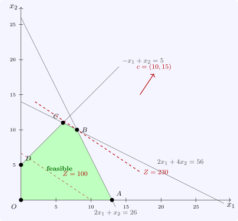

2.3 The graphical method
With two variables the feasible region can be drawn. Plot each constraint as a line, shade the side that satisfies it, and identify the polygon common to all. Draw the iso-profit lines \(c^{\mathsf T}x = Z\); they are parallel, and \(Z\) increases in the direction of the gradient \(c\). Slide the line in that direction as far as it still meets the region; the last point of contact is optimal, and by Theorem 2.2.3 it may be taken to be a vertex, so it suffices to evaluate \(Z\) at the vertices.
Example 2.3.1. Maximise \(Z = 10x_1 + 15x_2\) subject to \(2x_1 + x_2 \leq 26\), \(2x_1 + 4x_2 \leq 56\), \(-x_1 + x_2 \leq 5\), \(x_1, x_2 \geq 0\). The region is the pentagon with vertices \(O(0, 0)\), \(A(13, 0)\), \(B(8, 10)\), \(C(6, 11)\), \(D(0, 5)\) (Figure 2), where \(Z = 0\), \(130\), \(230\), \(225\) and \(75\). The maximum is \(Z = 230\) at \(B\), where the first two constraints are tight and the third has slack \(3\).

The method also shows the four things that can happen in an LP.
- A unique optimum at a vertex, as above.
- Multiple optima, when the objective is parallel to an edge of the region at which it is optimal. With \(Z = x_1 + 2x_2\) in Example 2.3.1, parallel to \(2x_1 + 4x_2 = 56\), every point of the edge \(BC\) gives \(Z = 28\). The optimal set is always convex: it is a face of the polyhedron.
- Unboundedness, when the region is unbounded in a direction along which the objective improves without limit.
- Infeasibility, when the constraints are inconsistent, as with \(x_1 + x_2 \leq 2\) and \(x_1 + x_2 \geq 3\).
A constraint that can be deleted without changing the region is redundant. When three or more constraint lines pass through one vertex in the plane, the vertex is degenerate in the sense of the last subsection.
Questions on this section
Stuck on something here? Ask below and it stays attached to this topic.